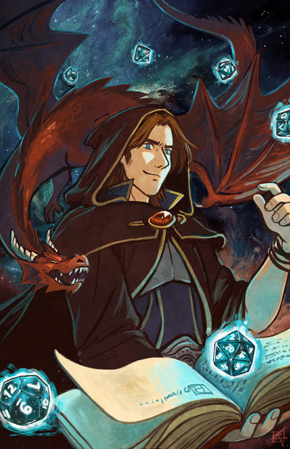
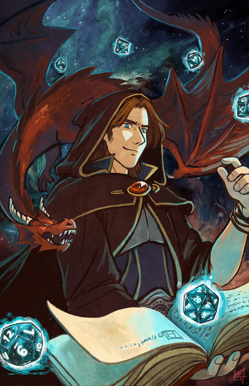

8 dicas essenciais para mestre de RPG iniciante
╬╬═════════❮◆❯═════════╬╬
Se você está começando a sua aventura para se tornar um mestre de RPG, seja num vôo solo ou
participando da Academia de Mestres da Nuckturp, talvez você queira algumas dicas rápidas e
essenciais para aprimorar sua habilidade de mestrar rapidamente.
Quando comecei minha jornada como mestre de RPG tive dois momentos importantes: quando me
aventurei pelas florestas escuras do aprendizado sozinho e quando encontrei o mestre Vitão,
o mestre Marcel e outros mestres que me ajudaram iluminando meu caminho.
Sim, ser um mestre de RPG é um processo de aprendizado constante! A gente ganha XP e sobe de
nível a cada sessão e a cada campanha que entregamos, não é mesmo?
01. Você não precisa saber todo o sistema de cor.
╬╬═════════❮◆❯═════════╬╬
Uma das principais armadilhas para o mestre de RPG iniciante é achar que ele precisa saber
TUDO de cabeça. Não, ninguém é tão gênio para saber as regras em sua completude. Além disso,
você pode se aproveitar dos próprios jogadores para aprender com eles. Assim, você consegue
criar um ambiente de cooperação e co-criação.
A. Você é o mestre!
Se você acredita que a regra A ou a regra B fazem mais sentido dentro do seu jogo, se você
quer inventar suas regras, está tudo bem! Os bons jogadores são aqueles abertos e flexíveis
aos devaneios do mestre. A única coisa que você não pode corromper de jeito nenhum é a
confiança dos jogadores. Se você os enganar ou mudar as regras para ferrá-los ou para
ajudá-los, tome cuidado. Existe uma linha tênue entre ajustar o jogo para servir a narrativa
e ajustar o jogo para servir a você.
B. A história é mais importante do que a regra.
O que será lembrado após anos da experiência de você como mestre de RPG na mesa em que irá
mestrar? Todos irão lembrar do mestre incrível que fez uma história onde todos se engajaram,
tomaram decisões e que trouxe várias elementos incríveis. É disso que as pessoas lembram,
não é se você usou perfeitamente as regras XYZ.


02. Você não conta a história sozinho.
╬╬═════════❮◆❯═════════╬╬
Primeiramente é importante você entender que a história é narrado por você, mas não contada
por você, caro mestre de RPG. Essa é uma diversão em grupo onde você narra os eventos, as
situações e descreve o cenário, ambiente e atitudes dos NPCs, mas quem domina o protagonismo
e decide o caminhar são os jogadores.
Geralmente eu começo uma campanha apenas com o prólogo e algumas alternativas, porém os
jogadores que decidem para onde querem ir. Se eles escolherem uma opção totalmente diferente
do que eu havia imaginado, está tudo bem. Agora é confiar na minha imaginação e deixar o
jogo fluir.
Ninguém irá criticá-lo por uma pequena pausa para pensar e criar rapidamente um local ou
NPC. Saiba disso. É um jogo de amigos e não um campeonato de julgamentos e críticas. Fique
tranquilo e narre no seu tempo. Assim você permite uma evolução gradual das suas
competências como mestre de RPG.
03. Comece em lugares fechados.
╬╬═════════❮◆❯═════════╬╬
Essa dica eu aprendi com o mestre Vitão! Pois eu era um mestre que sempre se estressava com
as dezenas de possibilidades de caminhos dos jogadores de ficarem numa taverna. Eu ficava
doido em ter que preparar tudo ao redor dos personagens e investia HORAS criando tudo, para
que os jogadores fizessem outra coisa, além do que eu criei.
Então, após um tempo, entendi que a melhor maneira de começar é em um lugar fechado. Pode
ser uma caverna, um prédio, um corredor e assim por diante. Portanto, você usa as barreiras
físicas do ambiente para impedir o devaneio dos jogadores para outro lugar. Dessa forma eles
começam tendo que sair do local ou algo do gênero.
04. Excesso de preparação na funciona.
╬╬═════════❮◆❯═════════╬╬
Um dos principais erros que cometi no começo! Apesar de sempre acreditar no meu potencial de
improviso, minha insegurança me levava a preparar dezenas de possibilidades locais e NPCs
para todo o lado. Assim eu passava horas debruçado sobre uma sessão, às vezes mais horas do
que a própria sessão para criar todos os NPCs, ambientes e situações pelas quais os
jogadores poderiam passar.
Porém, em 99% das vezes os jogadores faziam algo diferente do que eu montei. Uma vez cheguei
a montar 27 possibilidades distintas de sair de um ambiente. Eu queria estar preparado!
Embora eu tivesse pensado em tudo, eles fizeram algo diferente!
Desse dia em diante eu decidi que não ia mais preparar uma sessão e cometi o erro da dica
05.

05. 100% no improviso TAMBÉM não funciona.
╬╬═════════❮◆❯═════════╬╬
Decidido a improvisar minhas campanhas, percebi que nem sempre só o improviso funciona. A
gente fica perdido e não sabe o caminho. Além disso, a gente perde a coesão e transforma uma
potencial diversão em algo chato e difícil de engajar.
O improviso é algo magnífico e uma habilidade que todo mestre de RPG deve desenvolver. Na
Academia de Mestres a gente dá umas desafiadas em nossos mestres-alunos e sempre nos
surpreendemos com a rápida capacidade de adaptação de TODOS.
O QUE É IMPROVISO, DE VERDADE ?
O improviso é a nossa capacidade de extrair de nossas memórias, o que chamamos de biblioteca
mental, todas as referências para criar algo novo ou trazer uma releitura de algo que já
vivemos, assistimos ou lemos. Portanto, improvisar é usar tudo aquilo que já está na sua
cabeça ao seu favor.
06. Construa a partir de imagens.
╬╬═════════❮◆❯═════════╬╬
Uma das práticas mais discutíveis e interessantes é a de como formamos a nossa criatividade
e usamos recursos visuais nas mesas de RPG. Eu, como mestre de RPG, aprendi que a gente tem
duas formas de buscar referências e ilustrações na internet para usar em nossas mesas.
O método 01 usa mais uma criatividade interna, pois você irá imaginar o que está criando e
irá buscar imagens que condizem com o que você criou. Entretanto esse é um processo que pode
ser frustrante, porque encontrar as imagens certinhas na internet é complicado. Tive vários
personagens e lugares que eu nunca consegui encontrar uma ilustração por mais que eu
buscasse por horas! Pior que esse é o método que a gente usa para criar o nosso instagram. É
muito demorado! Porém é ideal para quem cria seus próprios cenários e sistemas.
O segundo método é mais versátil, pois você faz o contrário. Você busca as imagens na
internet que quer e depois cria o personagem em cima do que está vendo. Assim, você também
explora sua criatividade, mas com chaves visuais que podem facilitar sua criação. Além
disso, é muito mais rápido criar o que precisa.
Embora a criação não seja 100% sua, a não ser que saiba desenhar ou seja um ilustrador, é
mais fácil de encontrar elementos e usá-los ao seu favor. Um corredor cheio de sangue, pode
virar uma história de terror dentro de um bunker. Uma garotinha com as mãos coloridas no
vidro pode se tornar a história de um resgate corporativo ou a história da busca dos pais e
assim por diante.
07. Diversão é quando TODOS participam.
╬╬═════════❮◆❯═════════╬╬
Dizem que a verdadeira felicidade só acontece quando ela é compartilhada, você concorda? E a
diversão é maior quando todos os envolvidos participam, não é mesmo? Por isso em outro post
escrevi que o jogador não deve ser um NPC em uma mesa de RPG. Porém é do mestre, na minha
visão, gerenciar o jogo e a participação de todos os jogadores.
Por isso eu tenho algumas manias que eu uso durante o jogo, como por exemplo, chamar os
jogadores que estão quietos e só acompanhando o grupo. Como mestre de RPG, meu objetivo é
ser curioso sobre o que os personagens em minha mesa pensam e sentem, pois suas ações
derivam dessas duas coisas.
Se a gente se sente inseguro e com medo, o personagem foge ou se esconde. Se ele pensa que
vai ganhar e quer tal coisa, ele vai agir para tal. Por isso, é importantíssimo perguntar
aos jogadores o que seus personagens estão sentindo ou pensando.
Além disso, também chamo o jogador quieto e pergunto o que seu personagem está fazendo nesse
momento? Interrompo todo mundo até que o jogador aceite e respeite sua própria voz e diga o
que está acontecendo com seu personagem naquele momento. Dessa forma ele “volta ao jogo” e
percebe que sua decisão ou fala não será julgada ou criticada – medo que percorre alguns
iniciantes no mundo do RPG.
 


08. Comprometimento começa com o mestre de RPG.
╬╬═════════❮◆❯═════════╬╬
A gente sempre espera que nossos jogadores respeitem o tempo e cheguem cedo, estejam
presentes e assim por diante. Porém a gente como mestre de RPG faz o mesmo? Com o passar dos
anos, percebi que os jogadores correspondem identicamente ao mestre.
Se o mestre atrasa, os jogadores começam a atrasar. Porém, se o mestre é pontual, eles
também são. A energia e o engajamento dos jogadores é diretamente proporcional ao empenho e
engajamento do mestre. É incrível ver essa sinergia.